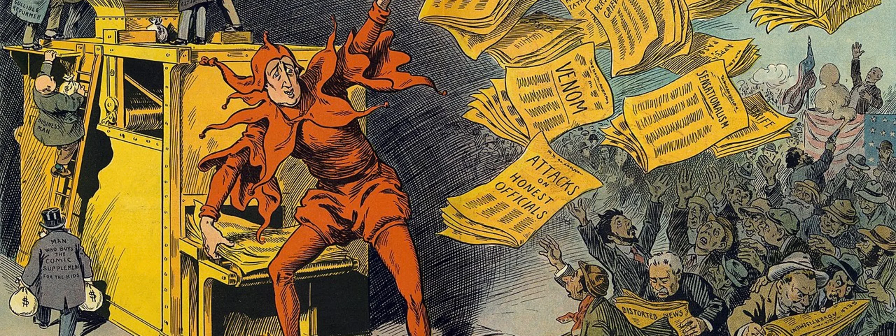

What is Yellow Journalism?
Yellow Journalism is an unprofessional and dishonest practice used by journalists and the media to get more people clicking and reading their articles. The technique first uses large, bold headlines and illustrations that can not be missed to attract the attention of as many people as possible. From there, the headline then uses over the top wording to get their audience hooked and reading. Typically the stories presented in these articles are very biased and far from the actual truth yet they seem to always fool so many people. Yellow Journalism is not just history, it still exists today more than ever before and it is important to know how you can identify it.
